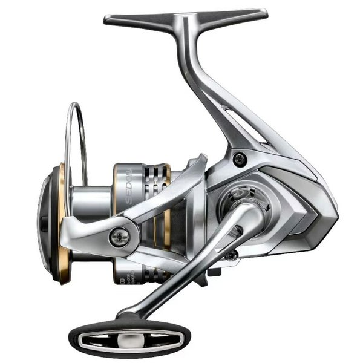
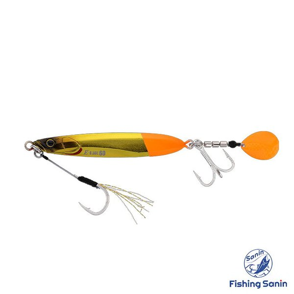
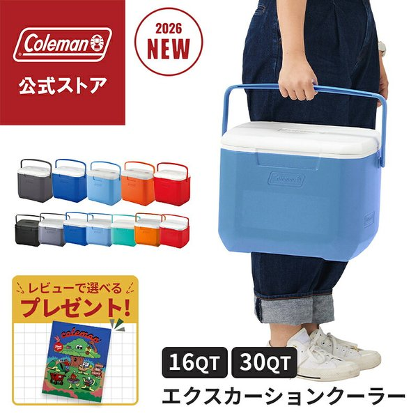
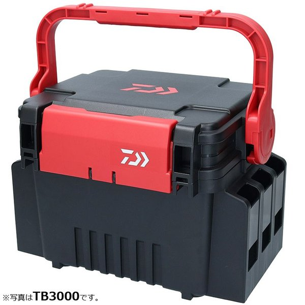
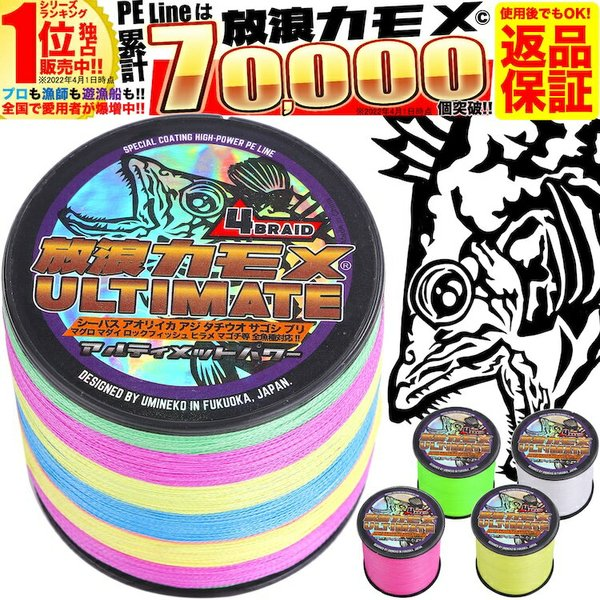
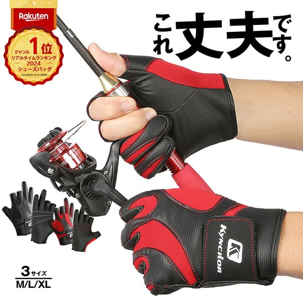
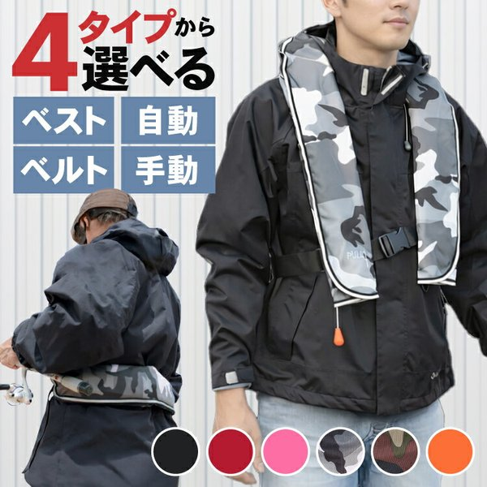
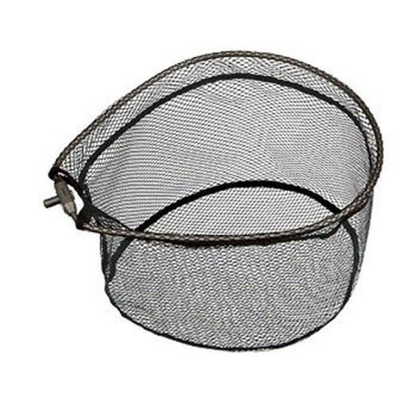
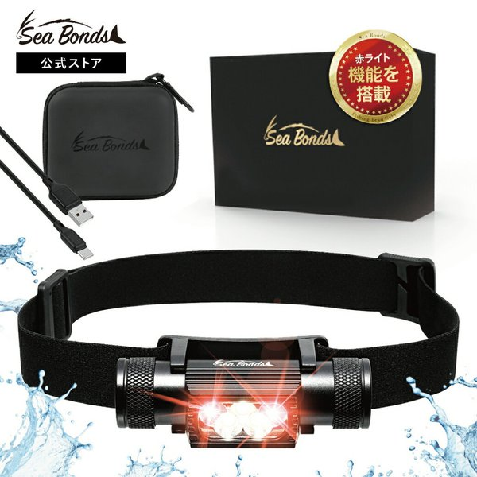
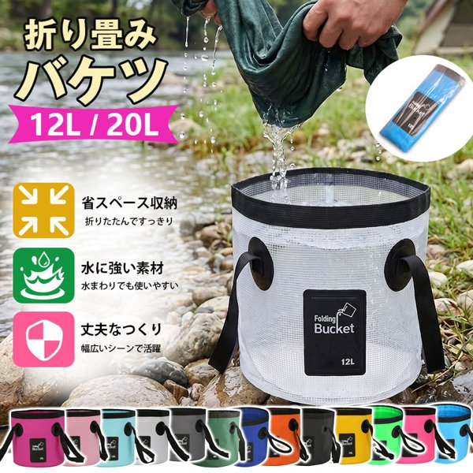

【2026年・釣り】フィッシング＆防寒アウトドアギア10選｜SHIMANO セドナ・JACKALLビッグバッカー・COLEMANクーラー・DAIWAタックルボックス・DABADAライフジャケット・SeaBondsヘッドライトを実売価格で比較
冬の釣りは、道具より先に「手と足元」がやられます。指先がかじかむと糸が結べず、暗くなると足元が見えない。だから冬の釣り道具は、リールやルアーと同じくらい、グローブ・ライト・防寒の優先度が上がります。
選ぶ軸は3つです。「まず釣り場」。堤防や小船ならライフジャケットは膨張式のベルトタイプ、磯やウェーディングなら浮力の大きいベストを選びます。「次に持ち運び」。クーラーボックスとタックルボックスは、車に積む前提なら容量重視、徒歩で移動するなら軽さ重視です。「最後に夜の準備」。ヘッドライトは明るさと赤色ライトの有無で選び、赤色があると魚を驚かせずに手元が照らせます。なお、レビュー件数が50件に満たない商品は記事内に実数を明記しています。
本記事では、楽天市場で人気・高評価の釣り・フィッシング＆防寒アウトドアギア10選を、実売価格とレビュー評価つきで写真付き紹介します。
- おすすめ10選 スペック・特徴比較表
- BEST 1｜SHIMANO 23 セドナ C3000 スピニングリール
- BEST 2｜JACKALL ビッグバッカー Eブレード（メタルジグ）
- BEST 3｜COLEMAN エクスカーションクーラー 16QT／30QT
- BEST 4｜DAIWA タックルボックス TB4000
- BEST 5｜放浪カモメ PEライン 500m（0.3〜6号）
- BEST 6｜Kyncilor フィッシンググローブ 3フィンガーレス
- BEST 7｜DABADA ライフジャケット（自動膨張式・ベルト／ベストタイプ）
- BEST 8｜PROX アルミフレーム ラバーコーティングネット 40×55cm
- BEST 9｜SeaBonds 釣り用ヘッドライト SPEC2（1000ルーメン）
- BEST 10｜折りたたみバケツ 12L／20L（ターポリン素材）
- 【読者負担0円】買わなくても得する無料サービス
- まとめ：釣り・フィッシングギア10選の選び方
| 順位 | 商品名 | ブランド | 最大の特徴・おすすめ理由 | 総合評価 |
|---|---|---|---|---|
| BEST 1 | SHIMANO 23 セドナ C3000 スピニングリール | SHIMANO（シマノ） | 入門価格帯で最初の1台に向く | 5.00 |
| BEST 2 | JACKALL ビッグバッカー Eブレード（メタルジグ） | JACKALL（ジャッカル） | ブレードで巻くだけで誘える | 4.80 |
| BEST 3 | COLEMAN エクスカーションクーラー 16QT／30QT | COLEMAN（コールマン） | 16QTと30QTから用途で選べる | 4.69 |
| BEST 4 | DAIWA タックルボックス TB4000 | DAIWA（ダイワ） | 仕切りトレーでルアーを分けられる | 4.73 |
| BEST 5 | 放浪カモメ PEライン 500m（0.3〜6号） | 放浪カモメ | 500m巻きでたっぷり使える | 4.61 |
| BEST 6 | Kyncilor フィッシンググローブ 3フィンガーレス | Kyncilor（キンシラー） | 指先が出て結び作業ができる | 4.61 |
| BEST 7 | DABADA ライフジャケット（自動膨張式・ベルト／ベストタイプ） | DABADA（ダバダ） | 水に落ちると自動で膨らむ | 4.47 |
| BEST 8 | PROX アルミフレーム ラバーコーティングネット 40×55cm | PROX（プロックス） | ラバー加工で魚を傷つけにくい | 4.53 |
| BEST 9 | SeaBonds 釣り用ヘッドライト SPEC2（1000ルーメン） | SeaBonds（シーボンズ） | 1000ルーメンで夜の足元が明るい | 4.80 |
| BEST 10 | 折りたたみバケツ 12L／20L（ターポリン素材） | ノーブランド企画品 | 畳んで薄くなる | 4.58 |
SHIMANO 23 セドナ C3000 スピニングリール

シマノの23セドナは、入門価格帯のスピニングリールです。C3000は、堤防のサビキやエギング、ライトなソルトゲームに使いやすい番手。AR-Cスプールで糸の放出がスムーズで、初めての1台でも扱いに困りません。楽天市場での実売価格は約6,005円（2026年11月時点）。
- 入門価格帯で最初の1台に向く
- C3000は堤防やライトソルトに合う
- AR-Cスプールで糸が放出しやすい
- レビュー3件とまだ少なく、大物狙いには番手が足りない
JACKALL ビッグバッカー Eブレード（メタルジグ）

ジャッカルのビッグバッカーEブレードは、ブレード付きのメタルジグです。青物や根魚、フラットフィッシュまで、巻いて誘えるので操作が難しくありません。10gから60gまでの重さがあり、水深と潮の速さで選べます。楽天市場での実売価格は約861円（2026年11月時点）。
- ブレードで巻くだけで誘える
- 青物から根魚まで対応
- 10g〜60gの重さ展開
- レビュー10件と少なく、根掛かりでロストしやすいので予備が要る
COLEMAN エクスカーションクーラー 16QT／30QT

コールマンのエクスカーションクーラーは、釣り場に持っていけるハードクーラーボックスです。16QTは約15L、30QTは約28Lで、1人から2人分の釣果と飲み物が入ります。取っ手が付いて車への積み下ろしがしやすく、帰りに氷が残っていれば釣果を冷やしたまま持ち帰れます。楽天市場での実売価格は約4,290円（2026年11月時点）。
- 16QTと30QTから用途で選べる
- 取っ手付きで車載しやすい
- 釣果と飲み物をまとめて冷やせる
- ハードタイプなので、徒歩で移動する釣り場では重い
DAIWA タックルボックス TB4000

ダイワのTB4000は、ルアーケースをまとめて収めるタックルボックスです。フタを開けると仕切りトレーが並び、ルアーと小物を分けて置けます。ランガン（移動しながら釣る）スタイルでも、腰に提げたり車に置いたりして使えます。楽天市場での実売価格は約4,965円（2026年11月時点）。
- 仕切りトレーでルアーを分けられる
- フタ付きで雨に濡れにくい
- 移動しながら使えるサイズ
- レビュー45件と50件未満。大型のルアーを入れるとフタが閉まらない
放浪カモメ PEライン 500m（0.3〜6号）

放浪カモメのPEラインは、500m巻きの4本編みラインです。0.3号から6号まで号数を選べ、5色の色分けで水深と飛距離が読みやすくなっています。10mごとの色替わりで、何m出したかを数えずに把握できます。楽天市場での実売価格は約2,060円（2026年11月時点）。
- 500m巻きでたっぷり使える
- 10mごとの色分けで距離が読める
- 0.3〜6号まで対応
- 500m巻きのため、リールによっては下巻きが必要になる
Kyncilor フィッシンググローブ 3フィンガーレス

Kyncilorのフィッシンググローブは、親指・人差し指・中指の先が出る3フィンガーレスです。手のひらに滑り止めの加工があり、濡れたリールでも滑りにくいのが特徴。冬の釣りで手を冷やさずに、糸の結びやルアーの交換ができます。楽天市場での実売価格は約1,330円（2026年11月時点）。
- 指先が出て結び作業ができる
- 手のひらが滑り止め加工
- 冬の釣りで手を冷やさない
- 3本カットなので、極寒では指先の冷たさは残る
DABADA ライフジャケット（自動膨張式・ベルト／ベストタイプ）

DABADAのライフジャケットは、水に落ちると自動で膨らむ膨張式です。ベルトタイプとベストタイプを選べ、普段は薄いので動きを妨げません。堤防や磯、船の釣りで、万一のときに浮力を得られます。楽天市場での実売価格は約4,480円（2026年11月時点）。
- 水に落ちると自動で膨らむ
- ベルト／ベストから選べる
- 普段は薄くて動きやすい
- 膨張式は一度使うとボンベの交換が必要で、維持に費用がかかる
PROX アルミフレーム ラバーコーティングネット 40×55cm

プロックスのラバーコーティングネットは、アルミフレームのランディングネットです。網がラバー加工なので、魚の体表を傷つけずにすくえます。40×55cmは堤防や小船で扱いやすい大きさで、折りたたまずにそのまま使うワンピースタイプです。楽天市場での実売価格は約3,774円（2026年11月時点）。
- ラバー加工で魚を傷つけにくい
- アルミフレームで軽い
- 40×55cmで扱いやすい
- レビュー15件と少なく、ワンピースなので携帯時は長い
SeaBonds 釣り用ヘッドライト SPEC2（1000ルーメン）

SeaBondsのSPEC2は、釣り向けに作られた充電式ヘッドライトです。1000ルーメンの明るさで、夜の堤防でも足元と水面を照らせます。赤色ライトに切り替えられるので、魚を驚かせずに手元の作業ができます。IP66の防水で、雨や波しぶきの中でも使えます。楽天市場での実売価格は約7,580円（2026年11月時点）。
- 1000ルーメンで夜の足元が明るい
- 赤色ライトに切り替えられる
- IP66の防水
- 高輝度モデルなので、連続点灯時間は長くはない
折りたたみバケツ 12L／20L（ターポリン素材）

ターポリン素材の折りたたみバケツは、使わないときは畳んで薄くなるバケツです。12Lと20Lから選べ、釣り場での水汲みや、ルアー・小物のつけ置き洗いに使えます。水を張ったままでも自立し、帰りは畳んでバッグの隙間に入ります。楽天市場での実売価格は約898円（2026年11月時点）。
- 畳んで薄くなる
- 12L／20Lから選べる
- 水汲みにもつけ置き洗いにも使える
- ノーブランド品のため、縫い目や耐久性には個体差がある
この記事の商品を買う前に、まずは無料で得する選択肢をチェック。どれも登録・利用は0円で、無料期間中に解約すれば料金はかかりません。読みたい雑誌がある人、ポイントを貯めたい人、アンケートなら気軽という人、それぞれに合うものを選べます。
初回31日無料・無料期間中に解約すれば0円 → 楽天ポイントモール｜登録無料で毎日ポイ活
買い物なしでもポイントが貯まる無料サービス → 楽天インサイト｜アンケートに答えてポイント
登録無料・すきま時間のアンケートで貯まる → 楽天カード｜年会費永年無料
新規発行・年会費ずっと0円 →
4つのサービスの違いと使い分けは「出費0円で得する！買わずにポイントが貯まる無料サービス厳選4選」でまとめています。
💡 まとめ：釣り・フィッシングギア10選の選び方
釣り道具は、リール・ルアー・保管・安全の4つに分けて揃えると迷いません。リールはSHIMANOの23セドナ C3000、ルアーはJACKALLのビッグバッカーEブレード。釣果を持ち帰るならCOLEMANのエクスカーションクーラー、道具の整理はDAIWAのタックルボックスTB4000、ラインは放浪カモメのPEライン500mをリールに合わせて。手元はKyncilorの3フィンガーレスグローブで結び作業を確保し、夜はSeaBondsのヘッドライト、水汲みと洗いには折りたたみバケツ。安全面はDABADAの膨張式ライフジャケット、取り込みはPROXのラバーネットで魚を傷つけずにすくえます。まずはリールとライフジャケットから揃えると、冬の釣行の不安が減ります。
楽天市場では「5と0のつく日」や「お買い物マラソン」などのキャンペーンに合わせて購入すると、ポイント還元が最大化してお得に手に入ります。ぜひチェックしてみてくださいね。